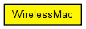

This is not an actual MAC implementation, just a prototype for wireless MAC's that use a MF (Mobility Framework)-based physical layer.
This component has been taken over from Mobility Framework 1.0a5.
Author: Daniel Willkomm, Andras Varga
The following diagram shows usage relationships between types. Unresolved types are missing from the diagram. Click here to see the full picture.
The following diagram shows inheritance relationships for this type. Unresolved types are missing from the diagram. Click here to see the full picture.
| Name | Value | Description |
|---|---|---|
| display | i=block/ifcard |
| Name | Direction | Size | Description |
|---|---|---|---|
| uppergateIn | input |
from the network layer |
|
| uppergateOut | output |
to the network layer |
|
| lowergateIn | input |
from the physical layer |
|
| lowergateOut | output |
to the physical layer |
// // This is not an actual MAC implementation, just a prototype for wireless MAC's // that use a MF (Mobility Framework)-based physical layer. // // This component has been taken over from Mobility Framework 1.0a5. // // @author Daniel Willkomm, Andras Varga // simple WirelessMac { @display("i=block/ifcard"); gates: input uppergateIn; // from the network layer output uppergateOut; // to the network layer input lowergateIn; // from the physical layer output lowergateOut; // to the physical layer }